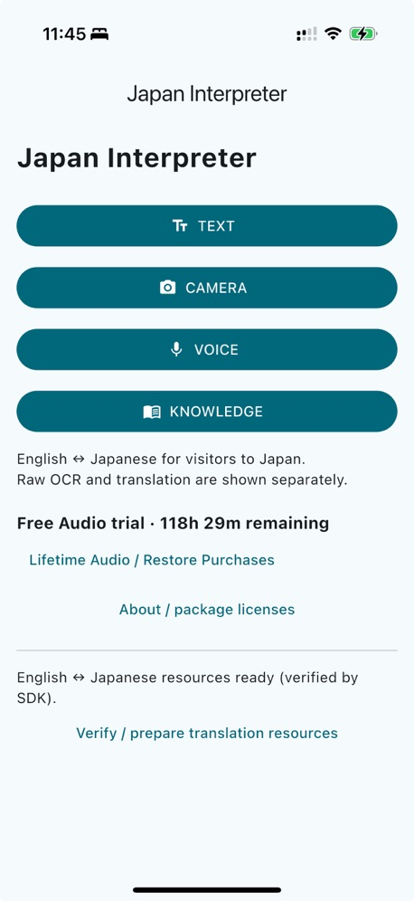
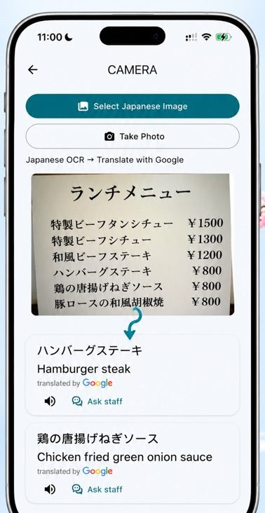
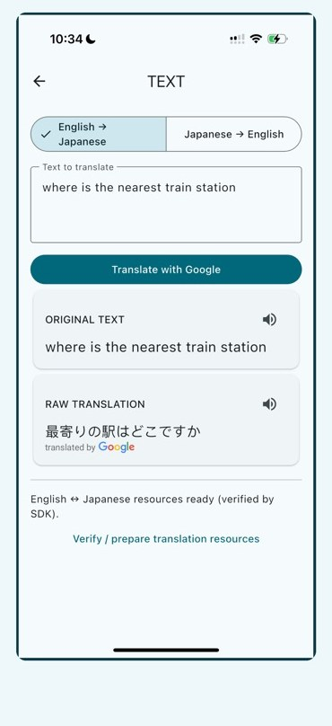
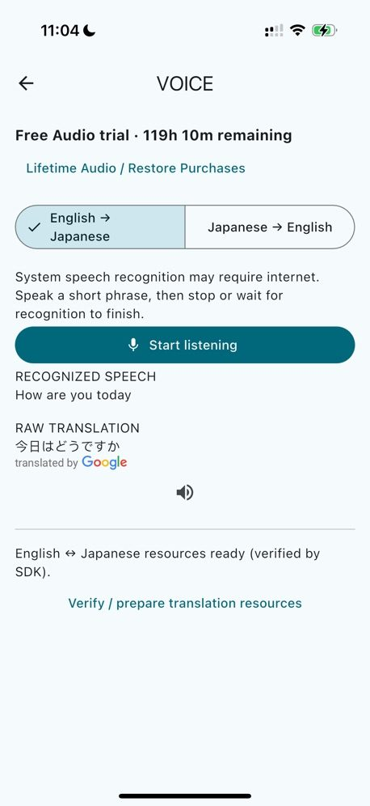
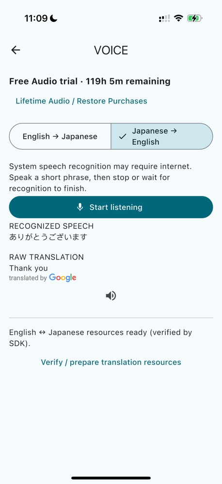
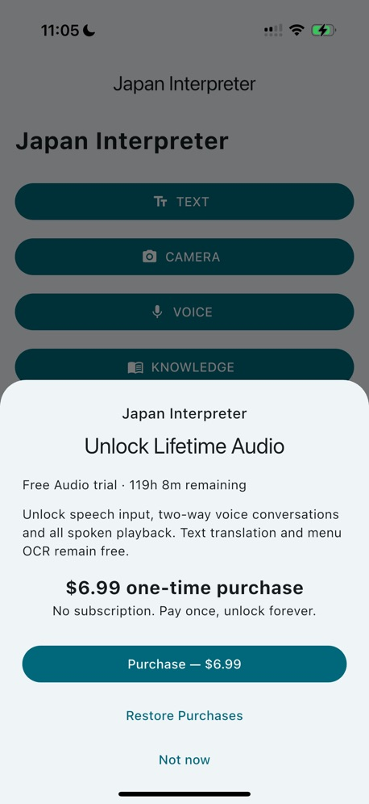

Japan Interpreter: the translator app for eating and getting around in Japan
Japan Interpreter translates between English and Japanese for the moments a trip actually turns on: a menu with no pictures, a sign you can't read, a question you need to ask out loud. Photograph the menu and it explains each dish in plain English — what it is, not just what it's called — and the core tools keep working with no WiFi.
Free to download · iPhone, iOS 15.5 or later · by AIBC International LLC

What it does
Four tools, each built for a specific moment on a Japan trip.
Camera & menu translation
Take a photo of a Japanese menu and the app reads it, then explains the dishes in plain English — hamburger steak is hamburger steak, not a string of kanji you're meant to guess at. Common allergens are flagged as you go.
The same camera works beyond menus: point it at any Japanese text — a sign, a ticket machine, a food label — and Point & Ask gives you the translation. That's the tool you reach for a dozen times a day.

Text translation
Type or paste in either direction — English to Japanese when you need to show someone a sentence, Japanese to English when a message, sign or label needs reading. Simple, fast, and it works on the resources already on your phone, so a dead signal doesn't stop it.

Voice interpreter
Some things can't be pointed at. Speak into the phone and it translates your sentence out loud, in both directions — English to Japanese when you're asking, Japanese to English when staff answer. It's made for the short exchanges of a trip: restaurants, hotels, shops, stations.
The two screens here are real: "How are you today" going out in Japanese, and a spoken "thank you" coming back in English.


Knowledge built in
Translation tells you what a dish is called. Knowledge tells you what it actually is — what's inside, raw or cooked, spicy or not, and where allergens like peanut, sesame or wheat tend to hide. The app carries the same dish explanations and ordering know-how as this site's guides, so the answer is in your pocket at the table, not back at the hotel.
New to the whole problem? Start with the guide this app grew out of: visiting Japan without speaking Japanese.
-
Dishes, explained
What each dish actually is: ingredients, cooking method, heat.
-
Printable allergy cards
Pick your allergens, print one card, hand it to the staff.
-
How to order ramen
Ticket machines and the phrases that cover most ramen shops.
How it works
Three steps, and the only one that needs WiFi happens before you leave home.
Download it — and the Japanese resources
Get the app from the App Store, then download the Japanese language resources while you're still on home WiFi. That one download is what makes the rest work offline.
At the restaurant, point the camera at the menu
Open Camera, take a photo of the menu, and read the dishes in English — with explanations and allergen flags, not just names.
Order, or ask out loud
Point at the dish to order it, or switch to Voice and ask your question — what's in this, is there a table, where's the platform — and hear the answer translated back.
Offline, honestly
"Works offline" gets promised loosely by translator apps. Here is exactly what it means for this one.
Works with no connection
- Text translationRuns on the language resources you downloaded before the trip.
- Camera & menu translationReads menus and signs from the same on-phone resources once they're set up.
- KnowledgeThe dish explanations and guides on your phone don't need a signal.
Depends on your phone — test it first
- Voice recognitionWhether speech recognition works offline depends on your phone, its operating system and the language. Some features require a connection.
- The fix is simpleBefore you fly, switch your phone to airplane mode and try the voice tool once. If it works in the kitchen, it works in Kyoto.
What it costs
The app is free to download, and the everyday tools stay free: text translation, camera and menu translation, Point & Ask, and the travel knowledge. No account, no subscription, nothing ticking monthly.
Audio is the one paid extra. Voice features start with a full-feature trial of 120 hours (five days) from your first translation. After that, the Lifetime unlock is a one-time US $6.99 purchase — pay once, no subscription, no automatic renewal, and you can restore the purchase on a new phone.
US App Store price shown; your store's price may differ slightly.

Questions
Does Japan Interpreter work without WiFi?
Text and camera translation run on your phone using language resources you download in advance, so they keep working offline once set up. Download the Japanese resources on WiFi before your trip. Voice recognition offline depends on your phone, operating system and language, so test it before you travel.
How much does Japan Interpreter cost?
Basic features stay free. A 120-hour full-feature trial starts with your first translation, and microphone translation afterwards needs Lifetime Premium, a one-time purchase (US reference price $6.99) with no subscription.
Can the app tell me which dishes contain allergens?
It is built to explain menu items and flag common allergens, but a menu description is never a guarantee of what is in the food. For a serious allergy, always show the restaurant a written allergy card and confirm with staff.
Which phones does Japan Interpreter run on?
Japan Interpreter runs on iPhone with iOS 15.5 or later. It is made by AIBC International LLC and is free to download from the App Store. The optional Lifetime audio unlock is a one-time purchase, not a subscription.
What can I use the voice interpreter for?
Speak into the phone and it translates between English and Japanese in both directions. Travelers use it for the short conversations that come up at restaurants, hotels, shops and stations — asking what is in a dish, where the platform is, or whether a seat is free.
More about the trip itself: browse the guides or go back to the JapanMust home page.
Going to Japan? Take the interpreter with you.
Download it at home, download the Japanese resources on your own WiFi, and the menus of Japan stop being a guessing game.
Free to download · iPhone, iOS 15.5 or later · Core tools stay free